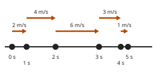

Beschleunigen, abbremsen, Richtung ändern
Mit einem KI-Tutor lernen
Ein KI-Tutor erklärt dir diese Seite und hilft dir bei den Übungen. Wähl deinen Assistenten:
Mit Claude öffnen Mit ChatGPT öffnen Mit Mistral Vibe öffnen
Du nutzt dein eigenes Konto beim Anbieter. Der Assistent ist kein Angebot von lernapps.net: lernapps liefert nur Inhalte und Übungen. Die Wahl gilt für alle Seiten, nur auf diesem Gerät.
Aus dem Alltag
Ein Bus fährt an der Haltestelle los, wird schneller, rollt gleichmäßig durch die Stadt, bremst vor der nächsten Haltestelle und hält an. An der Endstation wendet er und fährt zurück. In den meisten dieser Schritte ändert sich die Bewegung des Busses.
Wie schnell etwas fährt, weißt du schon: Die Geschwindigkeit ist die Strecke pro Zeit (Geschwindigkeit auf der Lernlandkarte). Auf dieser Seite geht es darum, wie sich die Geschwindigkeit ändert und wie du das beschreibst.
Anschaulich erklärt
Stell dir ein Auto auf einer geraden Straße vor. Jede Sekunde wird es fotografiert. Auf dem Bild unten sind die Punkte alle dasselbe Auto, jeweils zu einer anderen Zeit. Über jeder Sekunde liegt ein Pfeil. Er zeigt die Geschwindigkeit in dieser Sekunde. Wie lang er ist, zeigt das Tempo: Je länger der Pfeil, desto weiter kommt das Auto in einer Sekunde, so weit wie der Pfeil lang ist. Wohin er zeigt, ist die Richtung des Autos: nach rechts oder nach links. Die Pfeile liegen abwechselnd in zwei Höhen, damit man sie auseinanderhalten kann.

Die Punkte sind die Fotos im Abstand von einer Sekunde. Achte darauf, wie sich die Pfeile von Sekunde zu Sekunde verändern.
Quelle: eigene Zeichnung. Lizenz: CC-BY-4.0.| Der Pfeil von Sekunde zu Sekunde | Das Auto | Beispiel |
|---|---|---|
| wird länger | beschleunigt (wird schneller) | Anfahren an der Ampel |
| wird kürzer | bremst ab (wird langsamer) | Bremsen vor der Haltestelle |
| wechselt auf die andere Seite | ändert die Richtung | Wenden an der Endstation |
| bleibt gleich lang und zeigt auf dieselbe Seite | fährt mit gleichbleibender Geschwindigkeit | Fahrt auf der Landstraße |
Wechselt der Pfeil auf die andere Seite, ändert das Auto die Richtung, egal wie lang der Pfeil danach ist. Bleibt er auf derselben Seite, zählt nur, ob er länger oder kürzer wird.
- beschleunigen
Ein Körper beschleunigt, wenn sein Tempo größer wird, er also schneller wird.
- abbremsen
Ein Körper bremst ab, wenn sein Tempo kleiner wird, er also langsamer wird. Dabei fährt er noch; erst am Ende steht er.
Zwei Missverständnisse
Abbremsen heißt nicht "Geschwindigkeit null". Beim Bremsen wird die Geschwindigkeit Sekunde für Sekunde kleiner. Null ist erst das Ende, wenn das Auto steht.
Gleichbleibend heißt: Der Pfeil bleibt gleich. Das Auto fährt dann mit demselben Tempo in dieselbe Richtung weiter. Steht es (0 m/s), gibt es gar keinen Pfeil.
Eine Richtungsänderung ist auch eine Änderung der Geschwindigkeit, selbst wenn das Tempo gleich bleibt: Zur Geschwindigkeit gehört die Richtung. In der Wirklichkeit steht ein Auto beim Wenden kurz. Hier ist das nicht zu sehen, weil das Bild nur den Pfeil jeder ganzen Sekunde zeigt.
Beispiel
Ein Bus fährt zur Haltestelle
Ein Bus fährt fünf Sekunden lang. Die Tabelle zeigt, wie schnell er in jeder dieser Sekunden fährt.
| Sekunde | 1 | 2 | 3 | 4 | 5 |
|---|---|---|---|---|---|
| Geschwindigkeit in m/s | 10 | 8 | 4 | 2 | 0 |
Von Sekunde 1 zu 2, von 2 zu 3 und von 3 zu 4 wird die Zahl kleiner: Der Bus bremst ab. In Sekunde 5 ist sie null: Der Bus steht. Er ist langsamer geworden, bis er stand. Er hat nicht sofort angehalten.
Ausprobieren
Unten fährt ein Auto fünf Sekunden lang auf einer geraden Straße. Das Bild zeigt die Fotos als Punkte, über jeder Sekunde den Pfeil mit der Geschwindigkeit in m/s. Ein Minus bedeutet: in die andere Richtung, der Pfeil zeigt dann nach links.
Am Anfang fährt das Auto in jeder Sekunde mit 2 m/s nach rechts. „Sekunde 1“ ist die Zeit zwischen dem Foto bei 0 s und dem Foto bei 1 s, „Sekunde 2“ die Zeit danach, und so weiter. Mit − und + änderst du die Geschwindigkeit einer einzelnen Sekunde um 1 m/s. Unter 0 kommst du auf Minus, dann fährt das Auto nach links. Bei 0 m/s hat der Pfeil keine Länge, es steht nur eine 0 da. Du siehst sofort, wie sich die Punkte und die Pfeile verschieben. Mit „Zurücksetzen“ stellst du wieder überall 2 m/s ein. Baue die Fahrt, die die Aufgabe verlangt, und drücke „Prüfen“.
Aufgabe Nr. 1
Aufgabe Nr. 1
Baue eine Fahrt, bei der das Auto erst abbremst und dann die Richtung ändert.
Lösung
Zum Beispiel 4, 2, 0, −2, −4 m/s (die Geschwindigkeit in jeder der fünf Sekunden).
Übung
Übung
Lösung
Richtige Antwort: Die Aussage stimmt nicht.
Beim Abbremsen wird das Tempo kleiner, das Auto fährt aber noch. Null ist die Geschwindigkeit erst, wenn das Auto steht.
Mehr dazu:
Übung
Lösung
Es bremst ab. richtige Antwort
Das Tempo wird kleiner, von 5 auf 3 und dann auf 1 m/s. Das Fahrrad wird langsamer.
Es beschleunigt.
Beim Beschleunigen würde das Tempo größer. Hier sinkt es aber.
Es steht still.
Stillstand wäre die Geschwindigkeit 0 m/s. Das Fahrrad fährt noch mit 3 und mit 1 m/s.
Es fährt mit gleichbleibender Geschwindigkeit.
Gleichbleibend wäre es, wenn die Zahl sich nicht ändert, wie in den ersten drei Sekunden mit 5 m/s.
Die Geschwindigkeit sinkt von 5 auf 3 und dann auf 1 m/s, das Fahrrad bremst ab, ohne stehen zu bleiben.
Mehr dazu:
Übung
Lösung
Es bremst ab, ändert die Richtung und wird dann in der anderen Richtung schneller. richtige Antwort
Erst sinkt das Tempo von 3 auf 1, dann wechselt das Vorzeichen auf −1. Danach wird das Tempo in der anderen Richtung größer, bis 3 m/s.
Es bremst ab und bleibt dann stehen.
Dann müsste am Ende 0 m/s stehen. Das Auto fährt aber am Ende mit −3 m/s, also mit Tempo 3 in die andere Richtung.
Es beschleunigt die ganze Zeit in dieselbe Richtung.
Das Vorzeichen wechselt von + zu −, das Auto ändert also die Richtung.
Es fährt mit gleichbleibender Geschwindigkeit.
Die Zahlen ändern sich von Sekunde zu Sekunde, nur in den letzten beiden Sekunden bleiben sie gleich.
Der Wechsel von + zu − zeigt die Richtungsänderung. Davor wird das Tempo kleiner und danach in der anderen Richtung größer.
Mehr dazu:
Übung
Lösung
Richtige Antwort: Die Aussage stimmt.
Zur Geschwindigkeit gehört nicht nur, wie schnell etwas fährt, sondern auch die Richtung. Wechselt die Richtung, ändert sich die Geschwindigkeit, auch wenn der Pfeil gleich lang bleibt.
Mehr dazu: